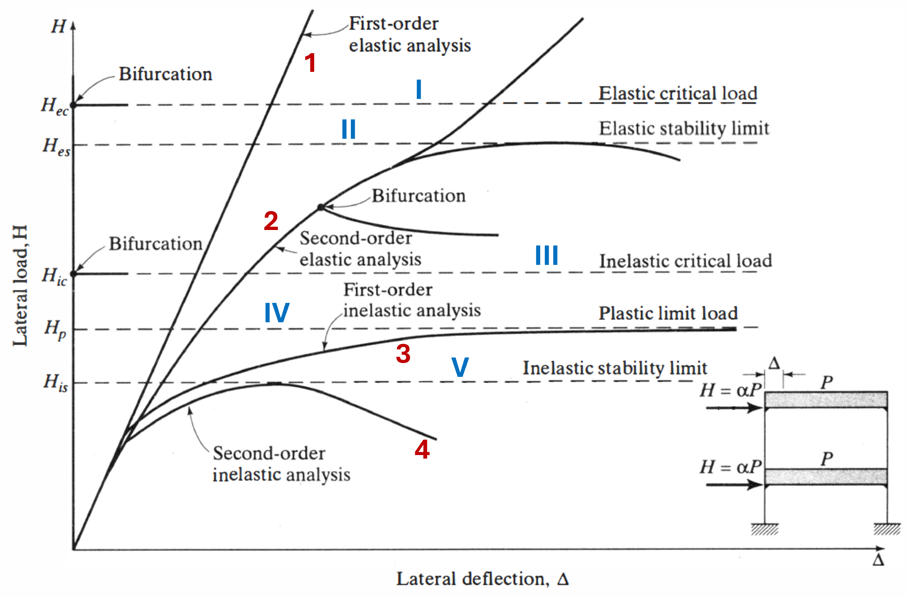

HW2 – Full Report
Step-by-step report: loading protocol, stiffness, unload branch; linear beam & BVP; fixed-Δ vs self-consistent P–Δ; χara Linear/PDelta/Corotational; discretization study; axial force distribution and stability plot.
Selected work from Homework 2: 1DOF spring workflow (Notebook 0), linear cantilever and P–Δ BVP (Notebook 1), χara FE comparison (Linear, PDelta, Corotational), and axial force diagnostics. Interactive report dashboard below.

Step-by-step report: loading protocol, stiffness, unload branch; linear beam & BVP; fixed-Δ vs self-consistent P–Δ; χara Linear/PDelta/Corotational; discretization study; axial force distribution and stability plot.
Contents: Problem 1 (1DOF modifications), Problem 2 (Euler–Bernoulli tip deflection and BVP check), Problem 3 (fixed-Δ vs self-consistent iteration and interpretation), Problem 4 (baseline table, tip displacement vs $n_{\text{ele}}$, geometric transformation discussion), Problem 5 (plot $N_e$ vs element, stiffness/instability/tension discussion), and References.